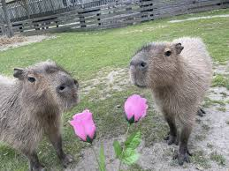

10ª Posição: Lagartixa pidonha

Ela tem cara de pidonha e sedenta
9ª Posição: Cobra verde

Ela e fofa e linda
8ª Posição: Capivara beesha
São apenas capivaras homosexuais
7ª Posição: Koala capenga
Ele é feio e bem burrinho
6ª Posição: Gato Flexionador
Ele e famoso pela sua cinturinha solta
5ª Posição: Diabo espinhoso
Ele é o capeta!
4ª Posição: Sapo atumalaka
MUHUHUHUWAWAAHHAHAHA
3ª Possição: Orictéropo

Orictéropo :D
2º Posição: Rato pelado
Não ria ele apenas está pelado
1ª Posição: Cachorro da especie "não sei se comento"
Ele é o mais divo de todos